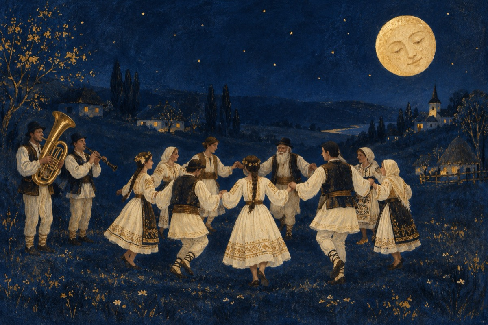

Amintiri
Cu-o tubă și-un clarinet,
Și vreo câțiva ceterași
Ne-adunam la horă-n sat
Pe-un cântec de fluierași!
Veneau fete și feciori
Îmbrăcați în straie albe,
Cu borduri, cu cănăfiori,
Sărbătoarea-n sat străbate!
Babele, moșnegăria,
Toți o fac pe tinereii.
Și se prind în horă abia,
De-și scutură zurgălăii
Pe-un grătar cu jar încins,
Mititeii se rumenesc.
Pe toți pofta i-a cuprins,
Și paharele ciocnesc!
Muzicanții mai cu foc
Cântă de răsună satul.
Și copiii intră-n joc,
Unu-i mai hazliu ca altul!
Bunicii, babele,
Stau pe margini și privesc.
Cu ochii cât cepele
Pe cei ce se-ndrăgostesc!
Așa a fost la noi în sat,
Satul ăl de altădat'
Acuma s-a demodat
Datinile s-au uitat!
Ce păcat!
Vasile Groza